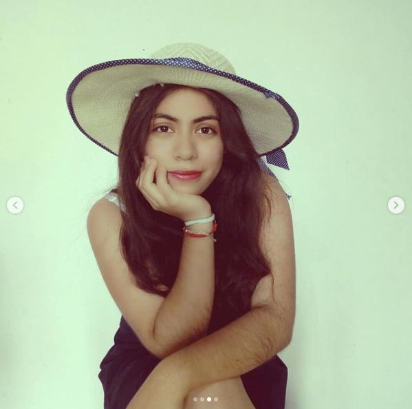

 Descripcción Actualmente estudio programación y el idioma ingles, en el futuro quisiera aprender mas idiomas y lenguajes de programación, considero que aprender a trabajar en equipo es importante para lograr grandes proyectos y que se necesita buena disiciplina en toda actividad. Clic para ver Alejandra Lopez Vega